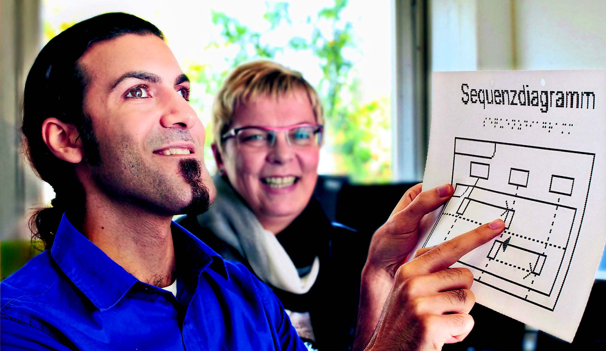
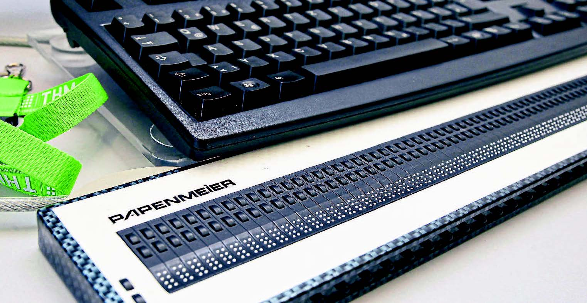

Gießener Allgemeine Zeitung:
Interview mit Mohammed Malekzadeh am 15.10.2015
Mohammed Malekzadeh ist im Alter von 18 Jahren erblindet.
Mehr als die Hälfte seines Lebens hatte der 30-Jährige zuvor als Sehender verbracht.
Ich vermisse nichts, sagt der Gießener im Interview der Woche zum heutigen Tag des weißen Stocks.

Herr Malekzadeh, wie klingt Gießen, wie riecht Gießen?
Mohammed Malekzadeh: Gießen ist für mich eine angenehme Stadt.
Ich bin ja aus Dortmund hierher gezogen. Da habe ich an einer Hauptstraße gewohnt,
die zum Hafen führt. Als ich nach Gießen kam und Wohnungen besichtigt habe, dachte ich immer wieder:
Hier ist es so still!
Was macht eine Stadt für Sie schön oder hässlich?
Malekzadeh: Schön für mich ist es, wenn ich mich gut in einer Stadt zurechtfinde,
wenn es auch ruhige Ecken gibt und wenn die Menschen offen und nett sind. In diesem Sinne ist
Gießen eine schöne Stadt. Es gibt fast überall Ampeln mit akustischen Signalgebern, ganz anders als in Dortmund.
Beim Leitsystem hat Gießen eine Vorreiterrolle. Außerdem zählt für mich: Gibt es eine Blindenpräsenz auf den Straßen,
oder bin ich der Einzige? Man merkt den Menschen an, ob sie schon einmal mit einem Blinden zu tun hat- ten.
Sie sind dann offener. Die meisten möchten gern helfen, sie wissen oft nur nicht, wie.
Wenn Sie einen anderen Blinden auf der Straße treffen, bekommen Sie das überhaupt mit?
Malekzadeh: Ja. Man hört den Stock, den er vor sich hin- und her bewegt.
Da spricht man einander auch mal an: Sonst bekommt man solche Kontakte eher übers Internet.
Wie gut funktioniert das Leitsystem in der Öffentlichkeit? Was wäre Ihrer Meinung nach vielleicht noch nötig?
Malekzadeh. Grundsätzlich sind Leitsysteme immer nur eine Hilfe.
Sie können nicht die Mobilität erhöhen. Ich erhoffe mir viel durch neue Navigationssysteme.
Solche Ansätze gibt es bereits für Flughäfen und Bahnhöfe. Sie basieren nicht auf GPS-Ortung,
sondern sind zentimetergenau, zum Beispiel über RFID oder Bluetooth.
Haben Sie Lieblingsorte in Gießen?
Malekzadeh: Drei. Ich bin sehr gern an der Lahn, im Botanischen Garten oder auf dem Elefantenklo.
Am liebsten, wenn die Sonne scheint und ich die passenden Erfrischungsgetränke dabeihabe.
Welchen Stellenwert hat das BliZ für Sie – und in der deutschen Hochschullandschaft?
Malekzadeh: Es ist in dieser Form einmalig in Deutschland.
Ein Aushängeschild für die THM und für Gießen. Wir versuchen, einen Schüler von der
Schule abzuholen, ihn durch sein Studium zu begleiten und auch danach für ihn da zu sein.
Außerdem gehen wir in Unternehmen und beraten sie, wie einfach sie behinderte
Mitarbeiter einstellen können und welche Vorteile das bringt.
Wann haben Sie erfahren, dass Sie erblinden werden? Und wie sind Sie damit umgegangen?
Malekzadeh: Ich war schon als Kind blendempfindlich und daher früh auf einer Sehbehindertenschule. M
it 16 hat man mir gesagt, dass ich nicht mehr lange werde sehen können. Wie ich reagiert habe? Rebellisch!
Man sagte mir, lern die Punktschrift, meine Antwort: „Ich will nicht.“ Mit Ach und Krach habe ich den
Realschulabschluss gemacht. Dann habe ich mich hingesetzt, Punktschrift gelernt und Mobilitätstraining genommen.
Sonst hätte ich kein Abi machen und nicht studieren können. Es war Kopfsache.
Gab es Wünsche, die Sie sich bewusst noch erfüllen wollten? Oder Dinge, die Sie sozusagen versucht haben zu speichern?
Malekzadeh: Hinter jedem Wunsch steckt Neugier. Ich hatte alles schon gemacht, wofür man sehen können muss.
Ich bin sehr früh – bei Besuchen im Iran – Auto gefahren, Motorrad gefahren,
habe mir stundenlang am Meer den Sternenhimmel angesehen. Selbst wenn man mir sagen würde,
du hast nur noch eine Woche zu leben, wäre das Einzige, was ich machen würde:
Alle meine großartigen Freunde anrufen und mich bei ihnen bedanken, dass sie mir bei meiner
Lebensreise beigestanden haben.
Sterne, Meer: Ist die Erinnerung für Sie schmerzhaft?
Malekzadeh: Ich vermisse nicht die Zeit, in der ich gesehen habe.
Wie immer im Leben sind die schwarzmalerischen Gedanken, die man sich macht,
viel schlimmer als die Realität an sich. Auch wenn die Zeit der Umstellung sehr hart war,
hat sie mir im Nachhinein sehr viel persönliches Wachstum gebracht. Wenn du häufiger Hilfe brauchst,
dann siehst du wie viele tolle, freundliche Menschen unterwegs sind. Ich nenne sie die Helden des Alltags.
Mir haben schon Rentner und Kinder, Ausländer, die gebrochen Deutsch sprachen, und Professoren,
Frauen wie Männer geholfen. Diese Menschen haben mir das Grundvertrauen im Leben gestärkt.
Lass dir helfen, und du kriegst mehr Unterstützung, als du für möglich hieltest.
Inwiefern leben Sie mit Bildern aus derVergangenheit? Zum Beispiel: Sie wissen, da steht ein Baum – sehen Sie dann einen Baum von früher?
Malekzadeh: Die Bilder sind noch in meinem Kopf, aber sie verzerren sich allmählich.
Es ist ein Prozess. Wenn ich vor einem Tisch sitze, habe ich ein Bild von einem Tisch in meinen Kopf.
Aber in der Regel ist das nur ein Gedankenkonstrukt. Je mehr Informationen ich dann erhalte,
sei es durch Beschreibungen oder durch Erfühlen, ändert sich das Bild. Mich hat die Erkenntnis stark geprägt:
Jeder hat seine eigene Realität, niemand nimmt alle Informationen wahr. Das gilt auch für Sehende.
Das zeigen zum Beispiel optische Täuschungen.
Betrachten Sie es eher als Nachteil oder als Vorteil, dass Sie ziemlich spät erblindet sind – im Vergleich zu Menschen, die von Geburt an blind sind?
Malekzadeh: Beides. Natürlich, ich habe nicht andere Sinne von klein auf geschult.
Es ist bei uns im BliZ ein Running Gag: Wenn mir einer einen Text in Brailleschrift hinlegt
(die Punktschrift zum Tasten, die Redaktion), sage ich: „Ich lege meine Finger drauf,
aber erwarte nicht, dass ich das lese.“ Bei langen Texten wird es für mich schwierig.
Allein der technische Fortschritt hat es mir ermöglicht, mein Studium zu absolvieren.
Kann man als junger Erwachsener noch das Gehör so trainieren, dass man damit Hindernisse wahrnimmt?
Malekzadeh: Ja, das geht. Man konzentriert sich und nimmt den Schalldruck wahr.
Schlimmer ist es für diejenigen, die als Ältere erblinden.
Ab etwa 60 wollen oder können viele nur noch schwer lernen.
Und was sind die Vorteile Ihrer Vergangenheit als Sehender?
Malekzadeh: Ich verstehe besser, wie sehende Menschen die Welt wahrnehmen,
und kann mit ihnen in ihrer Sprache sprechen.
Wenn Sie Kleidung kaufen: Wissen Sie eher als ein von Geburt an Blinder, ich möchte ein blaues Hemd?
Malekzadeh: Mit Farben ist das immer so eine Sache. Auch hier ist die Frage:
Ist das, was ich mir unter Blau vorstelle, die Realität? Allein wenn man die vielen Schattierungen von Blau bedenkt.
Beim Klamottenkauf vertraue ich einfach meiner Freundin, dass sie das Richtige aussucht.
Haben Sie mehrheitlich sehende oder sehbehinderte Freunde? Und was unternehmen Sie mit denen?
Malekzadeh: Mehrheitlich ... da müsste ich jetzt zählen. Es ist total lustig, wenn wir alle mal zusammen sind.
Was unternehmen wir? Kino, Stadt, Eis essen. Ganz unter Blinden wird das halt eher zum Abenteuer.
Welche Hilfsmittel nutzen Sie im Alltag?
Malekzadeh: Einen PC und einen Laptop mit Sprachausgabe und Braille Zeile. Einen Blindenstock.
Früher gab es auch teure Geräte wie Farberkenner, Lichtsensoren oder den Einkaufsfuchs, der Lebensmittel abscannt und vorliest.
Das gibt es heute alles als App fürs Smartphone – viel besser und immer auf dem neuesten Stand.
Apps eröffnen uns Blinden eine ganzneue Welt. Heikel bleibt alles, was mit Herd oder Backofen zu tun hat.
Kochendes Wasser von A nach B transportieren.
Solche Apps zu entwickeln, müsste ja ein großer Arbeitsmarkt für Blinde sein.
Malekzadeh: Leider haben viele Unternehmen, die das tun, noch nie mit einem Blinden zu tun gehabt.
Zum Beispiel die Online- Steuererklärung: Funktioniert nicht für Blinde. Wir sind viel bei Unternehmen,
um Wege für unsere Studenten zu ebnen.
Wie steht es um Arbeitsmarktchancen für Blinde?
Malekzadeh: Sie sind nicht toll. In der IT noch gut, weil sehr viele Fachkräfte gesucht werden.
Wenn ich Geld zur Verfügung hätte, würde ich die Entscheidungsträger in Unternehmen über die Leistungsfähigkeit
von Menschen mit Behinderungen aufklären. Ich würde sie informieren über Fördergelder und warum es für die Unternehmenskultur
eine Bereicherung ist, auch diese Personengruppe einzubinden.
Was bedeutet Ihnen Ihre Arbeit im BliZ?
Malekzadeh: Ich liebe meinen Job als Softwareentwickler. Manche fragen mich,
was hättest du beruflich gemacht, wenn du sehen könntest. Meine Antwort: Genau das,
was ich jetzt tue. Besonders schön finde ich es, dass ich als Betroffener anderen
Betroffenen helfen kann.
Das BliZ an der THM
„Ich wollte Blinden und Sehbehinderten den Weg in Naturwissenschaft und Technik erleichtern.“
So erklärt Prof. Erdmuthe Meyer zu Bexten ihre Initiative für das Blinden- und Sehbehindertenzentrum,
das 1998 an der Technischen Hochschule (damals FH) in Gießen gegründet wurde.
Das BliZ ist seitdem stetig gewachsen. Über 20 Mitarbeiter betreuen derzeit rund 80 Studenten intensiv,
bis zu 200 gelegentlich: Blinde, sehbehinderte und seit 2007 auch solche mit anderen Behinderungen.

Das Ziel: Benachteiligung der Klienten gegenüber nicht behinderten Kommilitonen bestmöglich
auszugleichen. Etwa mit PCs mit Braille Zeilen und Vergrößerungssoftware, die barrierefreie Anpassung
von Klausuren oder Hilfe bei der Zimmersuche. Zudem berät das Kompetenzzentrum bundesweit andere
Hochschulen, Institutionen und Unternehmen.
Kontakt: www.thm.de/bliz oder Tel.: 06 41/309-24 22